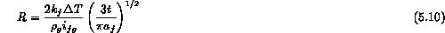
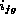
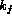

Once the vapor bubble on the heater surface is large enough at a given temperature that nucleation is assured, it will begin to grow in size. Remember, Equation 5.2 indicates that as the vapor bubble radius increases the required  for stability dramatically decreases. Now the actual
for stability dramatically decreases. Now the actual  continues to increase with the associated pressure difference, , causing
the bubble to grow. The first phase of growth is controlled by the large DP that initially exists balanced by the inertia of the surrounding liquid; i.e., inertial growth. As the bubble expands the is maintained by vaporization of the surrounding liquid, caused by energy transfer from the superheated liquid. The second phase of growth is controlled by the rate of energy transfer from the liquid to the vapor-liquid interface to produce vapor and maintain the pressure; i.e., thermal growth. The inviscid spherical momentum equation, sometimes called the Rayleigh equation, can be used under the assumption of constant to predict the bubble growth for the first phase of inertial growth
continues to increase with the associated pressure difference, , causing
the bubble to grow. The first phase of growth is controlled by the large DP that initially exists balanced by the inertia of the surrounding liquid; i.e., inertial growth. As the bubble expands the is maintained by vaporization of the surrounding liquid, caused by energy transfer from the superheated liquid. The second phase of growth is controlled by the rate of energy transfer from the liquid to the vapor-liquid interface to produce vapor and maintain the pressure; i.e., thermal growth. The inviscid spherical momentum equation, sometimes called the Rayleigh equation, can be used under the assumption of constant to predict the bubble growth for the first phase of inertial growth
where R is the bubble radius and is found by the initial superheat  . If heat transfer to the vapor-liquid interface controls the rate of vaporization then the bubble is small and growth is controlled by the rate of heat transfer through the liquid across the liquid superheat
. If heat transfer to the vapor-liquid interface controls the rate of vaporization then the bubble is small and growth is controlled by the rate of heat transfer through the liquid across the liquid superheat  and the second stage of growth is estimated by
and the second stage of growth is estimated by

where  ,  and are the latent heat, thermal conductivity and thermal diffusivity of the liquid. Mikic et al., (1971) developed a complete spherical bubble growth model giving
where Ja is the Jacob and b is a constant that depends if the spherical bubble is near a surface or an infinite medium (2/3). This model asymptotically reverts to the inertial or thermal models for very small or very large times.
At some diameter the buoyancy of the vapor bubble at the surface overcomes the restraining effects of the surface tension attaching the bubble to the heater surface. A force balance on the bubble (Figure 5.3) results in the following form to estimate this departure diameter
The proportionality constant depends on the bubble contact angle and stochastic processes; i.e., in actuality the observed bubble departure diameter has a statistical distribution around some mean given by Equ 5.11. Also the frequency of these bubbles departing the surface is important to know to estimate the energy carried away by bubble nucleation. This has been observed by a number of researchers to be governed by the growth rate (like Equ 5.10) and the waiting time for the vapor to reemerge from a surface cavity, i.e., the "waiting time." In fact for aqueous fluids, the waiting time is considered to be about equal to the bubble growth time at its departure diameter; i.e., from Equ 5.10. A number of investigators have correlated this time (or inverse frequency) to be given by the bubble diameter divided by the bubble rise velocity in a liquid
In either case the actual frequency is also statistically distributed about some correlated average; e.g., 20-50 for aqueous liquids.
With this background one can estimate the nucleate boiling heat flux as being the energy carried away by vaporizing bubbles on the heater surface
where (n/a) is the number of active cavity sites per unit area; i.e., a function of heater surface-liquid combination. Rohsenow (1962) suggested the following correlation based on this concept
where is the empirical constant linked to the fluid-surface combination ( for water and commercial steel - Vachon et al., 1965 and the exponent, m, on the Prandtl number, , is 1.0 for water and 1.7 otherwise. Also note that  is the superheat between the heater wall and the liquid saturation temperature, with properties evaluated at saturation conditions. This model for nucleate pool boiling is also shown in Figure 5.5. Notice that the heat flux increases with the cube of the liquid superheat, therefore .
is the superheat between the heater wall and the liquid saturation temperature, with properties evaluated at saturation conditions. This model for nucleate pool boiling is also shown in Figure 5.5. Notice that the heat flux increases with the cube of the liquid superheat, therefore .
This correlation is one of many (e.g., Forster, Zuber, 1955; Lienhard, 1976) which shows similar behavior of the heat flux being a strong function of the liquid superheat; , m = 2 - 3. Rohsenow suggested that these correlations all need to be empirically "normalized" by test data for any particular liquid-heater combination for a set of initial conditions, although the functional dependencies are quite general. As Figure 5.5 indicates the nucleate boiling curve needs to be joined to the natural convection region. In practice, the presence of mixed heat transfer modes (i.e., natural convection and nucleate boiling) is real and the most straight forward way is to interpolate between these regions; .